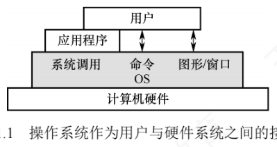

1.1 操作系统的基本概念
1.1.1 操作系统的概念
软件是计算机系统的灵魂，而操作系统是软件体系的核心。从使用层次看，计算机系统自下而上分为四层：硬件 → 操作系统 → 应用程序 → 用户（这一划分侧重人机交互视角，与计算机组成原理中的结构分层不是一回事）。最底层的硬件（CPU、内存、输入/输出设备等）提供基本计算资源；应用程序（文字处理、电子表格、编译器、浏览器等）利用这些资源去解决用户的实际问题；操作系统则夹在中间，管理硬件资源、为应用程序提供运行环境、充当硬件与用户之间的桥梁，通过协调多个应用程序对硬件的访问，保证整个系统高效、安全地运行。
据此可以给出定义：操作系统（Operating System，OS）是控制和管理计算机系统软/硬件资源、合理调度任务与分配资源，并为用户及其他软件提供统一接口与运行环境的最基本的系统软件。
1.1.2 操作系统的功能和目标
要为多道程序提供良好的运行环境，操作系统必须具备四大核心管理功能：处理机管理、存储器管理、设备管理、文件管理；为方便用户使用，它还要提供用户接口；同时，它通过抽象与虚拟化技术扩充硬件功能，提升资源利用率。教材用一个比喻串联这三大角色：把用户比作「雇主」、计算机比作「机器」，操作系统就是「工人」——它能协调控制各部件（资源管理），能接收雇主的命令并执行（用户接口），还能让复杂的机器变得简单易用、充分发挥价值（扩充机器）。
1. 操作系统作为计算机系统资源的管理者
- 处理机管理：在多道程序环境下，处理机的分配和运行都以进程（或线程）为基本单位，所以处理机管理本质上是对进程的管理，主要任务包括进程控制、进程同步、进程通信、死锁处理以及处理机调度等。这里顺带出现了「并发」：多个进程在一段时间内交替执行，宏观上呈现同时运行的特征。
- 存储器管理：目标是为多道程序提供良好的内存运行环境、方便用户并提高内存利用率，主要功能包括内存分配与回收、地址映射、内存保护与共享、内存扩充等。
- 文件管理：用户可见的持久化信息以文件形式组织，操作系统中负责这部分工作的就是文件系统，功能包括文件存储空间的管理、目录管理、文件读/写操作及访问保护等。
- 设备管理：着眼于提高设备利用率，主要包括缓冲管理、设备分配、设备驱动处理和虚拟设备等功能。
这些管理工作全部由操作系统自动完成，用户无须干预。
2. 操作系统作为用户与计算机硬件系统之间的接口
操作系统位于用户与硬件之间，是用户使用硬件的必经媒介：用户通过应用程序或直接交互方式访问系统服务，所有请求最终都由操作系统统一管理和调度。终端用户通过命令行和图形界面与系统通信，应用程序则通过系统调用请求服务。按服务对象与使用场景，接口分为用户接口（命令方式与图形方式，面向普通终端用户）和程序接口（即系统调用，专为应用程序设计）两大类。

（1）用户接口——为让用户直接或间接控制作业的执行，操作系统提供三类用户接口：
- 联机用户接口（命令行接口）：面向交互式用户，由键盘命令与命令解释程序组成。用户输入一条命令，系统立即解释执行，完成后交还控制权，即「雇主说一句话，工人做一件事并给出反馈」，实时交互。
- 脱机用户接口（作业控制语言）：用于批处理系统。用户把作业控制命令写成作业说明书，连同作业一起提交；系统调度到该作业时自动逐条解释执行说明书中的命令，全程无须用户实时干预——相当于「雇主预先给出任务清单，工人照单逐条完成」。
- 图形用户接口（GUI）：用图标、菜单、对话框等图形元素替代文本命令，用户借助鼠标等设备操作，底层仍通过系统调用与内核交互，大幅降低了使用门槛。
（2）程序接口——程序接口是应用程序在运行时请求操作系统服务、访问系统资源的唯一合法途径，其核心是一组系统调用，每个系统调用对应内核中实现某个特定功能的子程序。
要特别注意系统调用与库函数的关系：早期系统调用多基于汇编语言实现；在高级语言环境中，程序员通常调用标准库函数来间接触发系统调用。库函数本身并不是操作系统接口，它只是对系统调用的封装——例如 printf() 最终通过 write 系统调用输出数据，malloc() 在需要更多内存时可能调用 brk 或 mmap 系统调用；而 strlen()、sqrt() 这类纯计算型库函数完全在用户空间运行，不涉及任何系统调用。
3. 操作系统实现了对计算机资源的扩充
未安装任何软件的计算机称为裸机，它只是计算机系统的物质基础。裸机最内层，其外覆盖着操作系统：操作系统凭借资源管理功能和用户服务功能，把裸机抽象、扩展成一台功能更强、使用更便捷的扩充机器（逻辑机器）。
本章的重点是理解操作系统如何控制和协调处理机、存储器、设备、文件四大资源；接口与扩充机器只需理解基本思想即可。
1.1.3 操作系统的特征
操作系统是一种系统软件，但与其他软件显著不同，它拥有四个基本特征：并发、共享、虚拟、异步。这四个概念贯穿全书，是理解操作系统的钥匙。
1. 并发（Concurrency）
并发指两个或多个事件在同一时间间隔内发生。多道程序环境下，内存中同时驻留若干道程序，操作系统通过调度机制，在一道程序因 I/O 操作暂停时立即切换到另一道程序运行，使多道程序交替执行、CPU 保持高利用率。
与并发相对的是并行：两个或多个事件在同一时刻真正同时发生。在单处理机系统中，宏观上多道程序看似同时运行，微观上任一时刻只有一个程序在执行，因此属于并发而非并行；而 CPU 与 I/O 设备之间、多个 I/O 设备之间则可以实现真正的硬件并行。若要实现进程级别的并行，则需要多核 CPU 或多处理机等硬件支持。
| 并发 | 并行 | |
|---|---|---|
| 发生时刻 | 同一时间间隔内 | 同一时刻 |
| 微观实质 | 交替执行、分时占用 CPU | 多个事件同时进行 |
| 硬件条件 | 单处理机即可（配合中断与调度） | 需要多核 CPU、多处理机等硬件 |
| 典型例子 | 单处理机上的多道程序 | CPU 与 I/O 设备之间、多个 I/O 设备之间 |
教材用吃面包和写字打比方：9:00—10:00 之间先吃 10 分钟面包、再写 10 分钟字、交替进行，两种活动在同一时段交错但任一时刻只做一件，这是并发；右手写字的同时左手拿面包吃，两种动作同一时刻真正同时进行，这是并行。
操作系统中引入进程这一概念，核心目的之一就是支持程序的并发执行。
2. 共享（Sharing）
共享指系统中的资源可供内存中多个并发执行的进程共同使用。按资源特性与访问方式，共享分为互斥共享和同时访问两种形式。
| 互斥共享方式 | 同时访问方式 | |
|---|---|---|
| 访问限制 | 任一时间段内仅允许一个进程访问 | 允许多个进程在宏观上「同时」访问 |
| 微观实质 | 一个进程用完并释放后，另一进程才能用 | 通常是分时交替访问（分时共享） |
| 典型资源 | 打印机、磁带机等独占型物理设备；软件中的栈、变量、表格等临界资源 | 磁盘上的文件（尤其是只读文件）；用重入代码编写的程序 |
| 出错后果 | 若不互斥，多个进程同时输出会导致内容交错混杂 | 只要最终效果等同于连续访问即可 |
在一段时间内只允许一个进程访问的资源称为临界资源。计算机中的大多数独占型物理设备（如打印机）以及软件中的栈、变量、表格等都属于临界资源，必须以互斥方式共享。
并发与共享是操作系统两个最基本的特征，二者互为存在条件：一方面，资源共享以程序并发执行为前提——若系统只支持单道程序，就谈不上资源共享；另一方面，有效的资源共享机制又是并发执行的基础——若无法协调资源访问，并发程序会因竞争冲突而无法正确运行。
3. 虚拟（Virtual）
虚拟指通过某种技术把一个物理实体映射为若干个逻辑上的对应物：物理实体是真实存在的硬件资源，逻辑对应物则是用户或程序感知到的抽象资源。操作系统主要靠两类复用技术实现虚拟：时分复用与空分复用。
- 时分复用——虚拟处理器：利用多道程序设计技术让多道程序并发执行、分时共享同一个处理器。系统中只有一个物理 CPU，但每个用户都仿佛独占一个 CPU。
- 空分复用——虚拟存储器：把有限的物理内存扩展为更大的逻辑地址空间，用户程序面对的虚拟存储器，其逻辑容量通常超过实际物理内存。
- 虚拟设备：通过 SPOOLing 等技术把打印机这类独占型物理 I/O 设备改造为多台逻辑设备，每个用户可「独占」一台逻辑设备，系统在后台排队处理，临界资源因此变成可并发使用的共享资源。
4. 异步（Asynchronism）
多道程序环境下多个进程并发执行，但系统资源有限，进程的执行不是一气呵成的，而是以不可预知的速度断续推进——这就是进程的异步性。异步性使操作系统运行在高度不确定的环境中：若对共享资源的访问缺乏协调，就可能产生与时间相关的错误（例如多个进程并发修改全局变量而没有同步保护）。但只要程序正确使用操作系统提供的同步机制，其执行结果的正确性与可再现性就能得到保障。